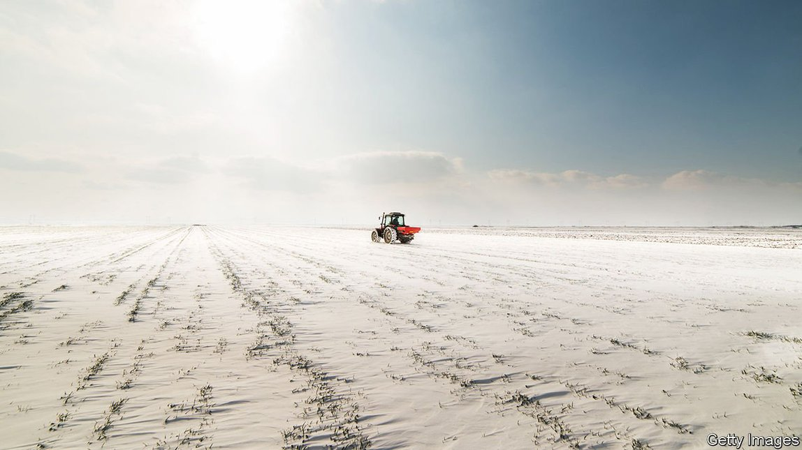
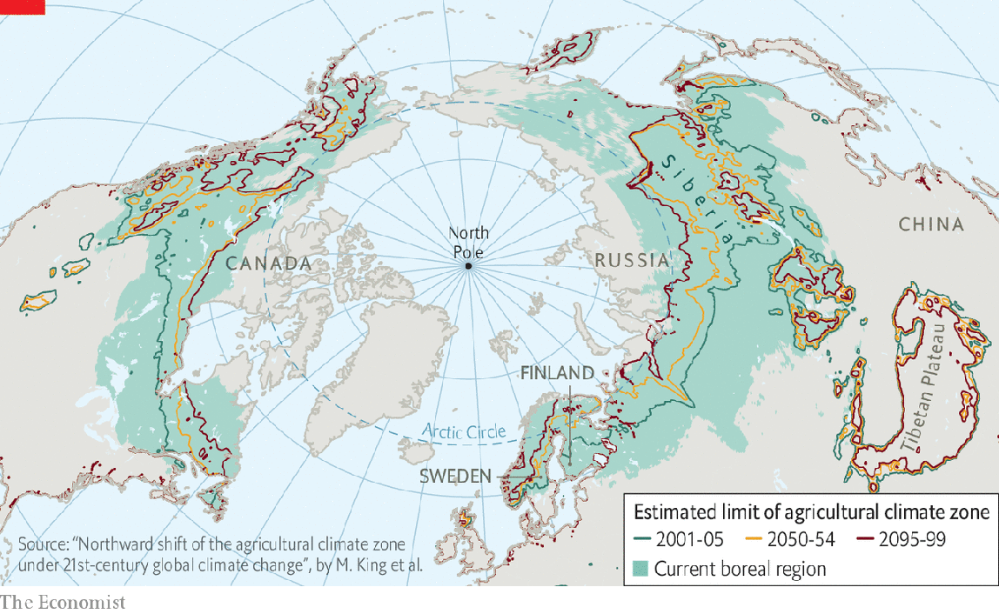
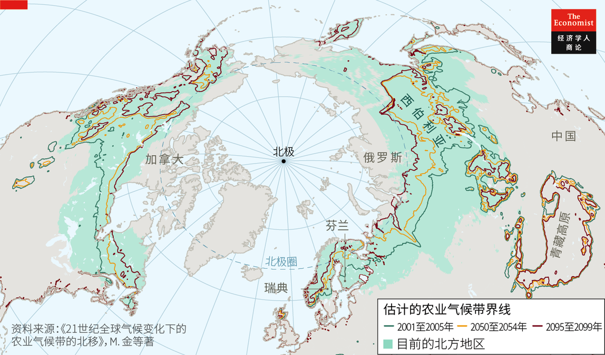

2021-09-30T15:25:36+00:00
New frontiers
开疆拓土
開疆拓土
Climate change will alter where many crops are grown
气候变化会改变很多作物的种植地
氣候變化會改變很多作物的種植地
That means gains for some people, but losses for more
一些人会从中受益，但更多人会受损【深度】
一些人會從中受益，但更多人會受損【深度】
TOM EISENHAUER remembers driving through Manitoba, a province in central Canada, more than a decade ago. Surrounding his car were fields of cold-weather crops, such as wheat, peas and canola (rape). Dense staples such as maize (corn) and soya, which are more profitable, were few and far between. The view is very different now. More than 5,300 square kilometres have been sown with soya and around 1,500 with maize.
汤姆·艾森豪尔（Tom Eisenhauer）还记得自己十多年前开车穿过加拿大中部的曼尼托巴省（Manitoba）的情景。两边的大片农田里种着小麦、豌豆和加拿大油菜等耐寒作物。玉米、大豆等更赚钱的高密度主要农作物少之又少。现在的景象大不相同了。大豆的种植面积超过5300平方公里，玉米大约有1500平方公里。
湯姆·艾森豪爾（Tom Eisenhauer）還記得自己十多年前開車穿過加拿大中部的曼尼托巴省（Manitoba）的情景。兩邊的大片農田裡種着小麥、豌豆和加拿大油菜等耐寒作物。玉米、大豆等更賺錢的高密度主要農作物少之又少。現在的景象大不相同了。大豆的種植面積超過5300平方公里，玉米大約有1500平方公里。
Mr Eisenhauer’s company, Bonnefield Financial, hopes to benefit from the ways that climate change is changing Canadian agriculture. The company buys fields and leases them to farmers, both in Manitoba and elsewhere in the country. It is betting that a warmer climate will steadily increase how much its assets are worth, by enabling farmers in the places where it is investing to grow more valuable crops than they have traditionally selected. It is far from the only business making such wagers. Climate change could make a cornucopia out of land that was once frigid and unproductive. It could also do great harm to regions that feed millions.
气候变化正在改变加拿大的农业形态，而艾森豪尔的公司Bonnefield Financial希望能从中获益。该公司在曼尼托巴省和加拿大其他地方购买土地，再租给农民。该公司期待，在自己投资的这些土地上，气候变暖能让农民去种植那些比传统作物更有价值的作物，从而让资产稳步升值。下此赌注的企业远远不止这一家。气候变化可能会让曾经寒冷的不毛之地变成丰饶之地。但它也可能对那些养活了千百万人口的地区造成巨大的损害。
氣候變化正在改變加拿大的農業形態，而艾森豪爾的公司Bonnefield Financial希望能從中獲益。該公司在曼尼托巴省和加拿大其他地方購買土地，再租給農民。該公司期待，在自己投資的這些土地上，氣候變暖能讓農民去種植那些比傳統作物更有價值的作物，從而讓資產穩步升值。下此賭注的企業遠遠不止這一家。氣候變化可能會讓曾經寒冷的不毛之地變成豐饒之地。但它也可能對那些養活了千百萬人口的地區造成巨大的損害。
The amount of space used to produce food has been increasing for centuries. Since 1700 areas of cropland and pastureland have expanded fivefold. Most of that growth came before the middle of the 20th century. Starting in the 1960s, the widespread adoption of chemical fertilisers, the development of more productive varieties of grains and rice, along with improved access to irrigation, pesticides and machinery, enabled farmers to make much better use of the fields they already tilled. In recent decades, technologies such as genome editing and better data crunching have helped lift yields even higher.
几个世纪以来，农业用地的面积一直在增加。自1700年以来，农田和牧场的面积增长了四倍。这些增长大部分发生在上世纪中叶以前。从上世纪60年代开始，得益于化肥的广泛使用、更高产的谷物和水稻品种的开发，以及灌溉技术、农药和农业机械的普及，农民对自己既有土地的利用得到极大改善。近几十年来，在基因组编辑和先进的数据处理等技术的帮助下，农作物产量进一步提高。
幾個世紀以來，農業用地的面積一直在增加。自1700年以來，農田和牧場的面積增長了四倍。這些增長大部分發生在上世紀中葉以前。從上世紀60年代開始，得益於化肥的廣泛使用、更高產的穀物和水稻品種的開發，以及灌溉技術、農藥和農業機械的普及，農民對自己既有土地的利用得到極大改善。近幾十年來，在基因組編輯和先進的數據處理等技術的幫助下，農作物產量進一步提高。
The rise in global temperatures which began towards the end of the 20th century slowed increases in productivity, but it did not stop them. A recent study by researchers at Cornell University calculates that, since 1971, climate change resulting from human activity has slowed growth in agricultural productivity by about a fifth.
自近上世纪末开始的全球气温上升虽然让农业生产率的增速放缓，但并没有让它完全停滞。康奈尔大学的研究人员最近的一项研究估计，自1971年以来，由人类活动导致的气候变化已经使农业生产率的增速放缓了约五分之一。
自近上世紀末開始的全球氣溫上升雖然讓農業生產率的增速放緩，但並沒有讓它完全停滯。康奈爾大學的研究人員最近的一項研究估計，自1971年以來，由人類活動導致的氣候變化已經使農業生產率的增速放緩了約五分之一。
The “headwind” caused by climate change will only become stronger, says Ariel Ortiz-Bobea, one of the study’s authors. Their research found that the sensitivity of agricultural productivity increases as temperatures rise. In other words, each additional fraction of a degree is more detrimental to food production than the last. That is especially bad news for food producers in places, such as the tropics, that are already warm. Another study predicts that for every degree that global temperatures rise, mean maize yields will fall by 7.4%, wheat yields will fall by 6% and rice yields will fall by 3.2%. Those three crops supply around two-thirds of all the calories that humans consume.
该研究的作者之一阿里埃尔·奥尔蒂斯-博贝亚（Ariel Ortiz-Bobea）表示，气候变化造成的“逆风”只会变得更猛烈。该研究发现，随着气温升高，农业生产率对此的敏感度也会提高。也就是说，温度每升高一点，对粮食生产的危害都会比上一次同样幅度的升温更大。对于像热带这样已经很暖和的地方的粮食生产商来说，这更是个坏消息。另一项研究预计，全球气温每升高一度，玉米、小麦和水稻的产量将分别下降7.4%、6%和3.2%。而人类消耗的所有卡路里大约有三分之二来自这三种作物。
該研究的作者之一阿里埃爾·奧爾蒂斯-博貝亞（Ariel Ortiz-Bobea）表示，氣候變化造成的“逆風”只會變得更猛烈。該研究發現，隨着氣溫升高，農業生產率對此的敏感度也會提高。也就是說，溫度每升高一點，對糧食生產的危害都會比上一次同樣幅度的升溫更大。對於像熱帶這樣已經很暖和的地方的糧食生產商來說，這更是個壞消息。另一項研究預計，全球氣溫每升高一度，玉米、小麥和水稻的產量將分別下降7.4%、6%和3.2%。而人類消耗的所有卡路里大約有三分之二來自這三種作物。
In the coming decades there will be more mouths to feed. The Institute for Health Metrics and Evaluation, an American research group, guesses that the global population will rise from around 7.8bn to 9.7bn by 2064 (after which it will fall). Growing middle classes in many developing countries are demanding a wider variety of food, and more of it.
未来几十年里，会有更多人口需要养活。美国研究机构健康指标与评估研究所（Institute for Health Metrics and Evaluation）估计，到2064年，全球人口将从现在的约78亿增加到97亿（之后会下降）。在许多发展中国家，不断壮大的中产阶级需要更多样化的食物，需要的数量也越来越大。
未來幾十年里，會有更多人口需要養活。美國研究機構健康指標與評估研究所（Institute for Health Metrics and Evaluation）估計，到2064年，全球人口將從現在的約78億增加到97億（之後會下降）。在許多發展中國家，不斷壯大的中產階級需要更多樣化的食物，需要的數量也越來越大。
Hence the importance of the changes global warming brings to farming areas. By expanding the tropics, it will change rainfall patterns in the subtropics. By warming the poles especially fast, it is opening up high-latitude land as quickly. The regions to the north of America and China are warming at at least double the global average rate. As Mr Eisenhauer’s experience in Manitoba can attest, crops are already moving polewards in response.
因此，全球变暖给农耕地区带来的各种变化就很重要了。它扩大了热带地区的范围，由此将改变亚热带地区的降雨模式。它令两极地区以尤其快的速度升温，从而使高纬度的土地正被同样快地开垦。美国和中国以北地区的温升速度至少是全球平均数的两倍。农作物种植已经开始向极地推移，艾森豪尔在曼尼托巴省的所见就是证明。
因此，全球變暖給農耕地區帶來的各種變化就很重要了。它擴大了熱帶地區的範圍，由此將改變亞熱帶地區的降雨模式。它令兩極地區以尤其快的速度升溫，從而使高緯度的土地正被同樣快地開墾。美國和中國以北地區的溫升速度至少是全球平均數的兩倍。農作物種植已經開始向極地推移，艾森豪爾在曼尼托巴省的所見就是證明。
A study by researchers at Colorado State University, published in Nature in 2020, found notable changes in the distribution of several rain-fed crops in the 40 years between 1973 and 2012, as farmers began to make different decisions about which crops were worth planting where. Maize production, for example, spread from America’s south-east to its upper-Midwest. Wheat has moved so substantially to the north, with the help of new irrigation methods, that it has outstripped the warming trend: the warmest places where it is grown today are cooler than the warmest places it grew in 1975.
科罗拉多州立大学的研究人员于2020年发表在《自然》杂志上的一项研究发现，随着农民开始就如何因地制宜地种植作物做出不同的决定，在1973年至2012年的40年间，几种雨养作物的分布发生了显著变化。例如，玉米产区从美国东南部蔓延到了中西部偏北地区。新的灌溉技术促成小麦种植范围大幅向北转移，甚至超过了全球变暖的影响范围：如今小麦种植地最暖区域的气温比1975年时更低。
科羅拉多州立大學的研究人員於2020年發表在《自然》雜誌上的一項研究發現，隨着農民開始就如何因地制宜地種植作物做出不同的決定，在1973年至2012年的40年間，幾種雨養作物的分布發生了顯著變化。例如，玉米產區從美國東南部蔓延到了中西部偏北地區。新的灌溉技術促成小麥種植範圍大幅向北轉移，甚至超過了全球變暖的影響範圍：如今小麥種植地最暖區域的氣溫比1975年時更低。
Soyabeans account for 65% of all the protein fed to farm animals. The cultivation of these wonder-beans has moved both north and south, as new breeds and other advances have allowed it to expand in tropical regions. The areas in which rice is harvested in China have expanded northward since 1949. Wine grapes and fruit crops have also migrated north.
在所有家畜的蛋白质饲料来源中，大豆占到65%。随着新品种和其他先进技术的出现，大豆被引种到了热带地区，这种神奇豆子的种植在南北两个方向都有扩展。自1949年以来，中国的水稻产区一直在向北扩展。酿酒葡萄和水果作物也向北方迁移。
在所有家畜的蛋白質飼料來源中，大豆佔到65%。隨着新品種和其他先進技術的出現，大豆被引種到了熱帶地區，這種神奇豆子的種植在南北兩個方向都有擴展。自1949年以來，中國的水稻產區一直在向北擴展。釀酒葡萄和水果作物也向北方遷移。
Mr Eisenhauer says investors are increasingly stumping up for Canadian land as a hedge against climate risks they face elsewhere. Martin Davies of Westchester, a big agricultural investment firm, says he is seeing similar trends in many parts of the world.
艾森豪尔表示，越来越多的投资者买入加拿大的土地，以对冲自己在其他地方面临的气候风险。大型农业投资公司Westchester的马丁·戴维斯（Martin Davies）说，他发现世界上许多地方都有类似的趋势。
艾森豪爾表示，越來越多的投資者買入加拿大的土地，以對沖自己在其他地方面臨的氣候風險。大型農業投資公司Westchester的馬丁·戴維斯（Martin Davies）說，他發現世界上許多地方都有類似的趨勢。
A moveable feast?
流动的盛宴？
流動的盛宴？
The bravest investors spy opportunity in lands that currently support no farming at all. For the moment only about one-third of the world’s boreal regions—a biome characterised by coniferous forests that covers vast tracts of land south of the Arctic Circle—boast temperatures warm enough to grow the hardiest cereals, such as oats and barley. This could expand to three-quarters by 2099, according to a study published in 2018 in Scientific Reports, a journal (see map). The share of boreal land that can support farming could increase from 8% to 41% in Sweden. It could increase from 51% to 83% in Finland.
最大胆的投资者在眼下根本无法耕作的土地上嗅到了机会。目前，北方气候带（即北极圈以南、大量覆盖针叶林的生态区）只有约三分之一地区足够温暖而可以种植燕麦、大麦等最耐寒的谷物。而根据2018年发表在《科学报告》（Scientific Reports）杂志上的一项研究，到2099年这一比例可能会扩大到四分之三（见地图）。在瑞典，可耕地占北方气候带的比例将从8%增加到41%。在芬兰，这一比例可能从51%上升到83%。
最大膽的投資者在眼下根本無法耕作的土地上嗅到了機會。目前，北方氣候帶（即北極圈以南、大量覆蓋針葉林的生態區）只有約三分之一地區足夠溫暖而可以種植燕麥、大麥等最耐寒的穀物。而根據2018年發表在《科學報告》（Scientific Reports）雜誌上的一項研究，到2099年這一比例可能會擴大到四分之三（見地圖）。在瑞典，可耕地佔北方氣候帶的比例將從8%增加到41%。在芬蘭，這一比例可能從51%上升到83%。
Efforts to farm these areas will alarm people who value boreal forests for their own sake. And cutting down such forests and ploughing up the soils that lie beneath them will release carbon. But the climatic effects are not as simple as they might seem. Northern forests absorb more heat from the sun than open farmland does, because snow-covered farmland reflects light back into space (in forests the snow is underneath the trees and not so directly illuminated). The fact that felling boreal forests may not worsen climate change, though, says nothing about the degree to which it could affect biodiversity, ecosystem services or the lives of forest dwellers, particularly indigenous ones.
开垦这些地区会让那些出于自身利益而珍视北方森林的人感到担心。而砍伐这些森林并翻耕下面的土壤会释放出碳。但这对气候的影响并不像看上去那么简单。北方森林比空旷的农田吸收的太阳热量更多，因为被雪覆盖的农田会把阳光反射回太空（而森林里的雪被树冠遮挡，不受那样直接的照射）。砍伐北方森林虽然可能不会加剧气候变化，但这么说并没有考虑到它对生物多样性、生态系统服务，以及林区居民特别是原住民的生活可能产生的影响。
開墾這些地區會讓那些出於自身利益而珍視北方森林的人感到擔心。而砍伐這些森林並翻耕下面的土壤會釋放出碳。但這對氣候的影響並不像看上去那麼簡單。北方森林比空曠的農田吸收的太陽熱量更多，因為被雪覆蓋的農田會把陽光反射回太空（而森林裡的雪被樹冠遮擋，不受那樣直接的照射）。砍伐北方森林雖然可能不會加劇氣候變化，但這麼說並沒有考慮到它對生物多樣性、生態系統服務，以及林區居民特別是原住民的生活可能產生的影響。
Some governments are already keen to capitalise on climate change. Russia’s has long talked of higher temperatures as a boon. President Vladimir Putin once boasted that they would enable Russians to spend less money on fur coats and grow more grain. In 2020 a “national action plan” on climate change outlined ways in which the country could “use the advantages” of it, including expanding farming. Since 2015 Russia has become the world’s largest producer of wheat, chiefly because of higher temperatures.
一些国家政府已经开始积极从气候变化中寻求好处。俄罗斯政府长期以来都把气温升高说成福祉。总统普京曾夸耀说，这会让俄罗斯人减少在毛皮大衣上的支出，并且种植更多粮食。2020年，一项有关气候变化的“国家行动计划”概述了俄罗斯可能如何从中“得益”，其中就包括扩大耕地面积。自2015年以来，俄罗斯已经成为世界上最大的小麦生产国，主要原因就是气温升高。
一些國家政府已經開始積極從氣候變化中尋求好處。俄羅斯政府長期以來都把氣溫升高說成福祉。總統普京曾誇耀說，這會讓俄羅斯人減少在毛皮大衣上的支出，並且種植更多糧食。2020年，一項有關氣候變化的“國家行動計劃”概述了俄羅斯可能如何從中“得益”，其中就包括擴大耕地面積。自2015年以來，俄羅斯已經成為世界上最大的小麥生產國，主要原因就是氣溫升高。
Russia’s government has started leasing thousands of square kilometres of land in the country’s far east to Chinese, South Korean and Japanese investors. Much of the land, which was once unproductive, is now used to grow soyabeans. Most are imported by China, helping the country reduce its reliance on imports from America. Sergey Levin, Russia’s deputy minister of agriculture, has predicted that soya exports from its far-eastern farmlands may reach $600m by 2024. That would be nearly five times what they were in 2017. The government of Newfoundland and Labrador, a province on the north-eastern tip of Canada, is also trying to promote the expansion of agriculture into lands covered by forests.
俄罗斯政府已经开始将本国远东地区数千平方公里的土地租给中国、韩国和日本的投资者。这些曾经的不毛之地现在很多被用来种植大豆，大部分都出口到了中国，帮助中国减轻对美国的进口依赖。俄罗斯农业部副部长谢尔盖·列文（Sergey Levin）预计，到2024年，俄罗斯远东地区出产的大豆出口额可能达到六亿美元。这将是2017年的近五倍。在加拿大东北角的纽芬兰与拉布拉多省（Newfoundland and Labrador），当地政府也在努力推动农业向林地扩张。
俄羅斯政府已經開始將本國遠東地區數千平方公里的土地租給中國、韓國和日本的投資者。這些曾經的不毛之地現在很多被用來種植大豆，大部分都出口到了中國，幫助中國減輕對美國的進口依賴。俄羅斯農業部副部長謝爾蓋·列文（Sergey Levin）預計，到2024年，俄羅斯遠東地區出產的大豆出口額可能達到六億美元。這將是2017年的近五倍。在加拿大東北角的紐芬蘭與拉布拉多省（Newfoundland and Labrador），當地政府也在努力推動農業向林地擴張。
There is a way, in addition to higher temperatures, in which the changes humankind is making to the atmosphere could help such projects along. Carbon dioxide is not just a greenhouse gas; it is also the raw material for the photosynthesis through which plants grow and feed themselves. For most plants, other things being equal, more carbon dioxide means more growth. The build-up of carbon dioxide over the past century has led to a clearly measurable “global greening” as those plants which benefit most from higher carbon dioxide levels thrive. This effect can help boost crop yields. But it is not an unalloyed good. Bigger crops may not be more nutritious crops.
除了气温升高，还有一种人类活动导致的大气变化也可能帮助推动这类项目。二氧化碳不仅仅是一种温室气体，它还是光合作用的原料——植物通过光合作用生长并为自己提供养分。对大部分植物来说，同等条件下，二氧化碳越多，植物生长越快。过去一个世纪里二氧化碳的累积带来了非常显著的“全球绿化”：从更高的二氧化碳水平中受益最多的那类植物茁壮成长。这一效应有助于提高作物产量，但并不完全是件好事。作物长得更大并不代表它们更有营养。
除了氣溫升高，還有一種人類活動導致的大氣變化也可能幫助推動這類項目。二氧化碳不僅僅是一種溫室氣體，它還是光合作用的原料——植物通過光合作用生長並為自己提供養分。對大部分植物來說，同等條件下，二氧化碳越多，植物生長越快。過去一個世紀里二氧化碳的累積帶來了非常顯著的“全球綠化”：從更高的二氧化碳水平中受益最多的那類植物茁壯成長。這一效應有助於提高作物產量，但並不完全是件好事。作物長得更大並不代表它們更有營養。
Moreover, climate change will alter patterns of rainfall. This will not necessarily benefit plans for more farming in northern climes. Many areas that are becoming mild enough to farm may end up lacking water, at least without intensive irrigation. Others may get too much. Crops are not the only organisms whose range expands as temperatures rise: pests and pathogens, which are often killed off by cold winters, spread too. Soil matters as well. The best quality stuff is most commonly found at lower latitudes, not far-northern ones.
此外，气候变化还会改变降雨模式。这不一定有利于在北方气候带开展更多耕种。许多正在变得气候温和而适宜耕种的地区到头来却可能会缺水，至少没法密集灌溉。另一些地方的雨水又可能过多。农作物并不是唯一随着气温升高而扩大了生长范围的生物：在寒冬原本常常会被冻死的害虫和病原体也会传播。土壤也很重要。质量最好的土壤通常位于纬度更低些的地区而不是极北地区。
此外，氣候變化還會改變降雨模式。這不一定有利於在北方氣候帶開展更多耕種。許多正在變得氣候溫和而適宜耕種的地區到頭來卻可能會缺水，至少沒法密集灌溉。另一些地方的雨水又可能過多。農作物並不是唯一隨着氣溫升高而擴大了生長範圍的生物：在寒冬原本常常會被凍死的害蟲和病原體也會傳播。土壤也很重要。質量最好的土壤通常位於緯度更低些的地區而不是極北地區。
Cold comfort
于事无补
於事無補
Some emerging farmland is near to established farming systems. But transforming remote regions of Siberia, to take one example—where much existing infrastructure is already sinking and breaking apart because of melting permafrost—will be slow and costly. Frontier farms will also have to attract and accommodate many more workers. They will have to rely increasingly on foreign migrants, an idea that voters in many rich countries do not much like.
一些新开垦的农田靠近已有的耕作系统。但开垦偏远地区的土地将会既耗时又费钱。以西伯利亚偏远地区为例，由于永久冻土的融化，这里许多现有的基础设施已经在下沉和解体。边远地区的农场还必须吸引并安置更多的劳工。这些农场将不得不越来越依赖外国移民，但许多富裕国家的选民不太喜欢这个主意。
一些新開墾的農田靠近已有的耕作系統。但開墾偏遠地區的土地將會既耗時又費錢。以西伯利亞偏遠地區為例，由於永久凍土的融化，這裡許多現有的基礎設施已經在下沉和解體。邊遠地區的農場還必須吸引並安置更多的勞工。這些農場將不得不越來越依賴外國移民，但許多富裕國家的選民不太喜歡這個主意。
All told, the northern expansion of farmland will only go some way towards mitigating the damage climate change may do to agriculture. The societies that will benefit from it are mostly already wealthy. Poor places, which rely much more heavily on income from exporting agricultural produce, will suffer.
总之，农田向北扩张只会在一定程度上减轻气候变化对农业可能造成的损害。日后会从中受益的社会现在大多已经很富裕了。而严重依赖农产品出口收入的贫困地区会遭受冲击。
總之，農田向北擴張只會在一定程度上減輕氣候變化對農業可能造成的損害。日後會從中受益的社會現在大多已經很富裕了。而嚴重依賴農產品出口收入的貧困地區會遭受衝擊。
A much wider range of adaptations will be needed if food is to remain as copious, varied and affordable as it is today. These will include efforts to help crops withstand warmer temperatures, for example through clever crop breeding, advances in irrigation and protection against severe weather. Rich and poor countries alike should also make it a priority to reduce the amount of food that is wasted (the UN’s Food and Agriculture Organisation guesses that more than one-third is squandered). The alternative will be a world that is hungrier and more unequal than it is at present—and than it might have been. ■
如果要让食物还像今天这样供应充足、种类多样、价格实惠，将需要有更多得多的应对方法。这包括想办法让作物能耐受更高的气温，比如依靠巧妙的作物育种、改良灌溉技术，以及防御恶劣天气等。不论富国穷国都应重视减少粮食浪费（联合国粮农组织估计超过三分之一的粮食都被浪费掉了）。否则，世界的粮食短缺和不平等问题将比现在更严重，也会比原本可能的情况更严重。
如果要讓食物還像今天這樣供應充足、種類多樣、價格實惠，將需要有更多得多的應對方法。這包括想辦法讓作物能耐受更高的氣溫，比如依靠巧妙的作物育種、改良灌溉技術，以及防禦惡劣天氣等。不論富國窮國都應重視減少糧食浪費（聯合國糧農組織估計超過三分之一的糧食都被浪費掉了）。否則，世界的糧食短缺和不平等問題將比現在更嚴重，也會比原本可能的情況更嚴重。